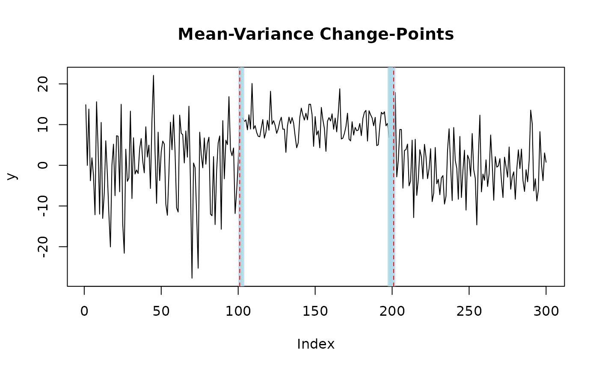

Plot method for mich.fit objects
plot.mich.fit.RdPlots the resulting fit and estimated change-points from calling mich().
Usage
# S3 method for class 'mich.fit'
plot(
x,
level = 0.95,
max_length = NULL,
signal = FALSE,
cs = TRUE,
n_plots = 5,
...
)Arguments
- x
A mich.fit object. Output of running
mich()on a numeric vector or matrix.- level
A scalar. A number between (0,1) indicating the significance level to construct credible sets at when
cs == TRUE.- max_length
An integer. Detection threshold, see
mich_sets(). Equal to \(\log^{2}(T)\) by default.- signal
A logical. If
TRUE, then the posterior mean and precision signals are also plotted.- cs
A logical. If
TRUE, thenlevel-level credible sets for each detected change-point are also plotted.- n_plots
An integer. Number of plot to display at once when data
yis a matrix.- ...
Additional arguments to be passed to methods.
Examples
set.seed(222)
# generate univariate data with two mean-variance change-points
y = c(rnorm(100,0,10), rnorm(100,10,3), rnorm(100,0,6))
fit = mich(y, J = 2) # fit two mean-variance change-points
# plot change-points with 95% credible sets
plot(fit, level = 0.95, cs = TRUE)

# fit one mean and one mean-variance change-point
fit = mich(y, J = 1, L = 1)
# plot change-points with 95% credible sets and signal
plot(fit, level = 0.95, cs = TRUE, signal = TRUE)
 # generate correlated mulitvariate data with two mean-variance change-points
T <- 150
Sigma <- rbind(c(1, 0.7), c(0.7, 2))
d <- ncol(Sigma)
Sigma_eigen <- eigen(Sigma)
e_vectors <- Sigma_eigen$vectors
e_values <- Sigma_eigen$values
Sigma_sd <- e_vectors %*% diag(sqrt(e_values)) %*% t(e_vectors)
Z <- sapply(1:d, function(i) rnorm(T))
mu <- c(-1, 2)
mu_t <- matrix(0, nrow = 70, ncol=d)
mu_t <- rbind(mu_t, t(sapply(1:30, function(i) mu)))
mu_t <- rbind(mu_t, matrix(0, nrow = 50, ncol = d))
Y <- mu_t + Z %*% Sigma_sd
# fit MICH and pick L automatically using ELBO
fit = mich(Y, L_auto = TRUE)
plot(fit, level = 0.95, cs = TRUE, signal = TRUE)
# generate correlated mulitvariate data with two mean-variance change-points
T <- 150
Sigma <- rbind(c(1, 0.7), c(0.7, 2))
d <- ncol(Sigma)
Sigma_eigen <- eigen(Sigma)
e_vectors <- Sigma_eigen$vectors
e_values <- Sigma_eigen$values
Sigma_sd <- e_vectors %*% diag(sqrt(e_values)) %*% t(e_vectors)
Z <- sapply(1:d, function(i) rnorm(T))
mu <- c(-1, 2)
mu_t <- matrix(0, nrow = 70, ncol=d)
mu_t <- rbind(mu_t, t(sapply(1:30, function(i) mu)))
mu_t <- rbind(mu_t, matrix(0, nrow = 50, ncol = d))
Y <- mu_t + Z %*% Sigma_sd
# fit MICH and pick L automatically using ELBO
fit = mich(Y, L_auto = TRUE)
plot(fit, level = 0.95, cs = TRUE, signal = TRUE)